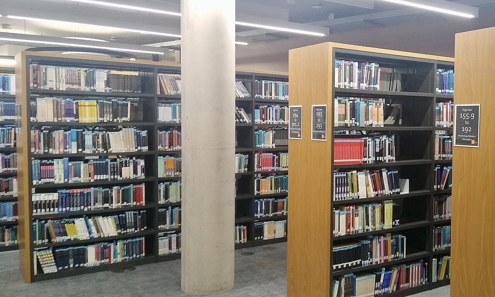
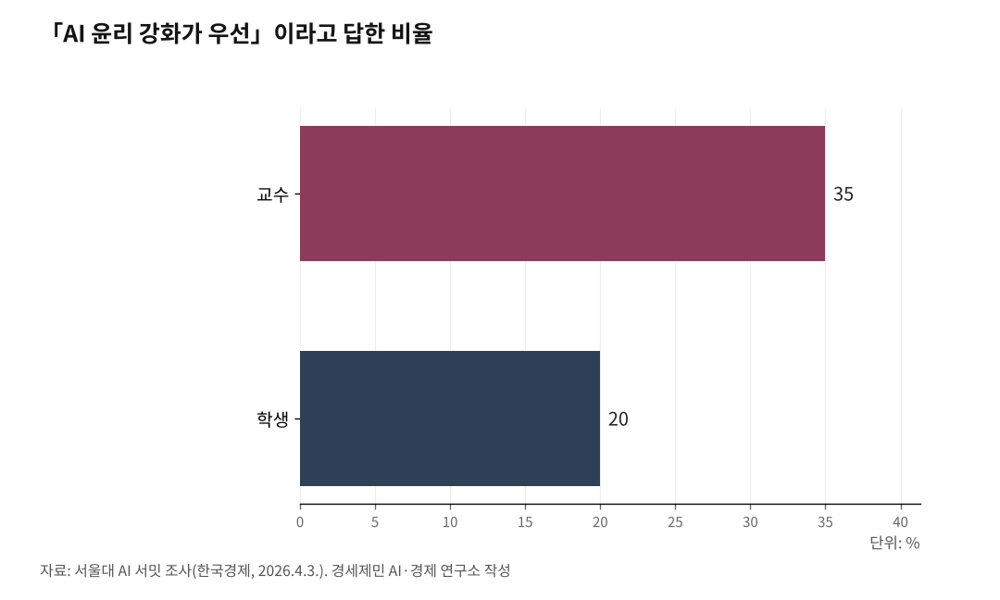

[AI 메모리 전쟁③] 대학원생 92%가 AI를 쓰는데 진짜 공부는 어떻게
대학 과제 56%에서 AI 흔적, 학술지 참고문헌 70%가 가짜
AI가 대신해줄수록 연구자가 더 공부하는 역설
머신만 러닝하고 연구자는 러닝하지 않으면 안 된다
1. 토큰이 작으면 AI가 거짓말한다, 참고문헌 70% 가짜의 기술적 원인
AI는 사실을 '이해'하지 않는다. 확률적으로 가장 그럴듯한 다음 단어를 예측할 뿐이다. 1편에서 설명한 것처럼 AI 답변 정밀도는 토큰(AI가 한 번에 기억하는 문맥의 양)에 좌우된다.

토큰이 크면 긴 논문을 통째로 읽고 맥락을 유지한 채 답한다. 토큰이 작으면 앞부분을 잊어버린다. 빈자리를 '상상'으로 채운다. 없는 논문 제목을 지어내고, 없는 저자를 만들어낸다. 그럴듯하게.
카세나 등이 2024년 국제학술지 '현대골다공증리포트'에 발표한 연구가 이를 증명했다. 챗GPT 4.0이 단독 작성한 리뷰 논문 초고에서 참고문헌 최대 70%가 부정확했다. 저자명, 학술지명, 발행연도까지 정교하게 꾸며냈지만 데이터베이스에는 없는 논문이었다.
무료 AI 기억 창은 좁다. 유료 AI 기억 창은 넓다. 2편에서 다룬 토큰 격차가 연구 품질 격차로 직결되는 현장이 바로 대학원이다. 무료 AI로 논문을 쓰는 대학원생과 유료 AI로 쓰는 대학원생 사이에 참고문헌 정확도부터 차이가 난다.

2. 대학 과제 56%에서 AI 흔적, 그러나 대학은 2026년에야 첫 가이드라인
AI 기업 무하유가 2025년 1월 발표한 자료를 보자. 2024년 한 해 동안 검사한 문서 173만7,366건 가운데 55.9%에서 생성형 AI 사용이 탐지됐다. 검사 문서 70.04%가 대학 과제물이었다. 과제 평가 업체 CK브리지가 같은 해 2학기 검사한 29만4,239건 중 27.33%는 표절률이 30%를 넘었다.
2025년 11월에는 연세대·고려대·서울대에서 AI를 활용한 부정행위가 잇따라 터졌다. 대학 과제 절반 이상에서 AI 흔적이 나오고, 명문대에서 집단 커닝이 벌어지는데 대학 대응은 3년 넘게 늦었다.
서울대가 첫 AI 가이드라인을 제정한 것이 2026년 1월이다. 교육부와 대교협이 '대학 AI 활용 윤리 가이드라인' 간담회를 연 것이 2026년 2월 27일이다. 각 대학 배포는 5월 예정이다. AI는 2022년 말부터 퍼졌다. 대학 규범은 이제야 첫발을 뗐다.
2026년 4월 2일 서울대 AI 서밋에서 공개된 조사 결과가 상황을 보여준다. AI 윤리 강화가 우선이라고 답한 교수는 35%인데 학생은 20%에 그쳤다(한국경제, 2026.4.3.). 교수와 학생 사이에 온도차가 있다. 규범이 없으니 기준도 없고, 기준이 없으니 갈등만 커진다.
3. AI를 쓰는 동안 성적은 오르지만 AI를 빼면 효과가 사라진다
스탠퍼드대 교육연구기관 SCALE이 2026년 발표한 보고서는 AI와 교육에 관한 800편 이상의 논문을 분석했다. 인과관계를 엄밀하게 검증한 연구는 20편뿐이었다.
공통 패턴이 있다. AI를 쓰는 동안에는 수학, 프로그래밍, 글쓰기에서 성과가 올라간다. AI를 빼고 독립 평가하면 결과가 엇갈린다. 효과가 유지된 경우도 있지만, 원래 수준으로 돌아가거나 떨어진 경우도 있다.
이것이 뜻하는 바는 분명하다. AI가 옆에 있을 때 잘한 것이지, 학생 머릿속에 지식이 쌓인 것인지 구분이 안 된다. 스탠퍼드 보고서는 "AI 도구가 학습을 돕는 것인지, 과제를 대행하는 것인지 구분하는 것이 핵심 질문"이라고 지적했다. 시험장에서 AI를 빼면 실력이 드러난다. 그때 남는 것이 진짜 공부다.
4. AI 비서 시대, 왜 지금 더 급한가
AI가 단순 챗봇에서 알아서 일해주는 비서(에이전트)로 진화하고 있다. 1편에서 다룬 것처럼 최신 AI는 기억 창이 100만 토큰까지 늘었다. 논문 수백 쪽을 통째로 읽고 분석하는 수준이다.
AI가 문헌 검토, 데이터 분석, 논문 초안까지 대행하는 시대가 됐다. 그런데 전문가조차 AI 결과물을 검증하지 않는 사례가 쏟아지고 있다. 미국 법원에서 AI가 만든 가짜 판례가 2025년 누적 854건 적발됐다. 전문 변호사조차 검증 없이 법원에 제출했다가 제재를 받았다.
대학원도 다르지 않다. AI가 만든 참고문헌 70%가 가짜인 초고를 검증 없이 학술지에 제출하면 연구 부정행위가 된다. AI 성능이 올라갈수록 거짓도 더 정교해진다. 검증 능력이 없으면 속을 수밖에 없다.
5. 학회·대학·정부가 동시에 움직이기 시작했다
네이처는 2023년 1월 AI를 논문 저자로 인정하지 않겠다고 밝혔다. 사이언스도 같은 달 AI가 생성한 텍스트를 논문에 쓰는 것을 금지했다. 한국연구재단은 2024년 3월 'AI가 생성한 내용에 대해 인간 연구자가 최종 책임을 져야 한다'고 권고했다.
미국 오하이오주립대는 2025년 전공과 무관하게 모든 학부생이 AI 교육을 이수하게 하는 계획을 시작했다. 단순 금지가 아니라 "AI를 쓰되 검증하는 능력"을 교육 목표로 전환한 것이다. 카네기멜론대는 2018년 미국 최초로 학부 AI 전공을 신설하면서 AI 윤리를 필수로 지정했다.
교육부가 2026년 5월 배포할 가이드라인도 같은 방향이다. AI 탐지 도구 결과를 맹신하지 말고, 교수가 전문적 판단으로 AI 활용 여부를 종합 검토하라고 명시했다. 고려대 김자미 교수는 "AI 생성물인지 알아채지 못하는 교수가 있다면 대학 교육이 무너지고 있다는 방증"이라고 말했다(머니투데이, 2026.2.27.).
6. 머신만 러닝하고 연구자는 러닝하지 않으면 안 된다, 구체적으로 어떻게
칼텍(캘리포니아공과대학교) 신경생물학 연구팀에 따르면 인간 뇌는 1초당 10비트만 처리한다. 감각기관이 1초에 1조 비트를 수집하지만 뇌는 그중 10비트만 골라 쓴다. AI가 1초에 수만 단어를 쏟아내는 속도와 뇌가 정보를 소화하는 속도 사이에 거대한 괴리가 있다.
AI 출력을 그대로 받아들이면 뇌에 아무것도 남지 않는다. 구체적인 방법은 세 가지다.
첫째, AI가 정리한 선행연구를 그대로 쓰지 말고 원문을 직접 읽는다. 원문을 읽어야 AI가 빠뜨린 맥락과 한계를 잡아낼 수 있다.
둘째, AI가 만든 참고문헌을 학술 검색 사이트에서 직접 확인한다. 참고문헌 70%가 가짜일 수 있다는 사실을 알면 검증 없이 쓸 수 없다.
셋째, AI 초안을 받아들이지 말고 "이 논리가 맞느냐, 근거가 뭐냐" 따진다. 따지는 과정에서 기존 지식과 AI 답이 부딪히고, 그때 해당 분야 지식이 뇌에 저장된다. AI가 틀렸다는 것을 발견하는 순간이 가장 깊은 학습이 일어나는 순간이다.
머신은 러닝한다. 연구자도 러닝하는가. 카세나 등의 연구가 보여줬다. AI에게 맡기면 참고문헌 70%가 가짜다. 검증하는 사람만이 진짜를 가려낸다.
[참고자료]
· Kacena, M. A. et al., Current Osteoporosis Reports, 2024.
· 무하유, "GPT킬러 2024년 검사 결과", 2025.1.14.
· CK브리지, "2024년 2학기 과제 평가 결과", 2024.
· 서울대, "서울대학교 AI 가이드라인", 2026.1.1. (서울경제, 2026.1.8.)
· 교육부·대교협, "대학 AI 활용 윤리 가이드라인 간담회", 2026.2.27. (머니투데이, 2026.2.27.)
· 조영환, "AI 기반 대학교육 혁신 인식 조사", 서울대 AI 서밋 2026, 2026.4.2. (한국경제, 2026.4.3.)
· 김자미(고려대 교수), 교육부·대교협 간담회 발언, 2026.2.27. (머니투데이, 2026.2.27.)
· Stanford SCALE Initiative, "The Evidence Base on AI in K-12: A 2026 Review", 2026.
· 다미엔 샤를로탱, AI 할루시네이션 법원 적발 집계, 2025.
· Nature Editorial, 2023.1.24.
· Science Editorial, "ChatGPT is fun, but not an author", 2023.1.27.
· 한국연구재단, "생성형 인공지능 도구의 책임 있는 사용을 위한 권고사항", 2024.3.
· Caltech Neurobiology, 뇌 정보 처리 속도 연구.
사진 출처
· [대표사진] Mertbiol, "Books on library shelves, Davison Building, Royal Holloway University of London, Surrey - September 2026 - 04.jpg", 위키미디어 공용, CC0, https://commons.wikimedia.org/wiki/File:Books_on_library_shelves,_Davison_Building,_Royal_Holloway_University_of_London,_Surrey_-_September_2026_-_04.jpg
※ 이 기사는 인공지능을 활용해 작성했습니다.
관련기사
- [AI 메모리 전쟁④] AI 산업 병목이 GPU에서 메모리로 옮겨간다
- [AI 메모리 전쟁②] 토큰 격차가 학력 격차가 된다
- [AI 메모리 전쟁⑤] 개인투자자가 알아야 할 메모리 반도체의 현재와 미래
- 내 AI는 왜 자꾸 딴 소리를 할까 — 토큰과 메모리가 결정하는 AI 답변의 품질
저작권자 © AI경세제민 무단전재 및 재배포, AI학습 및 활용 금지